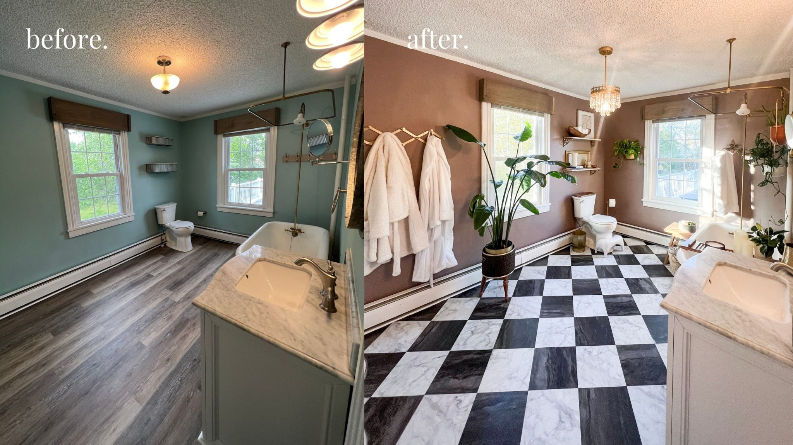
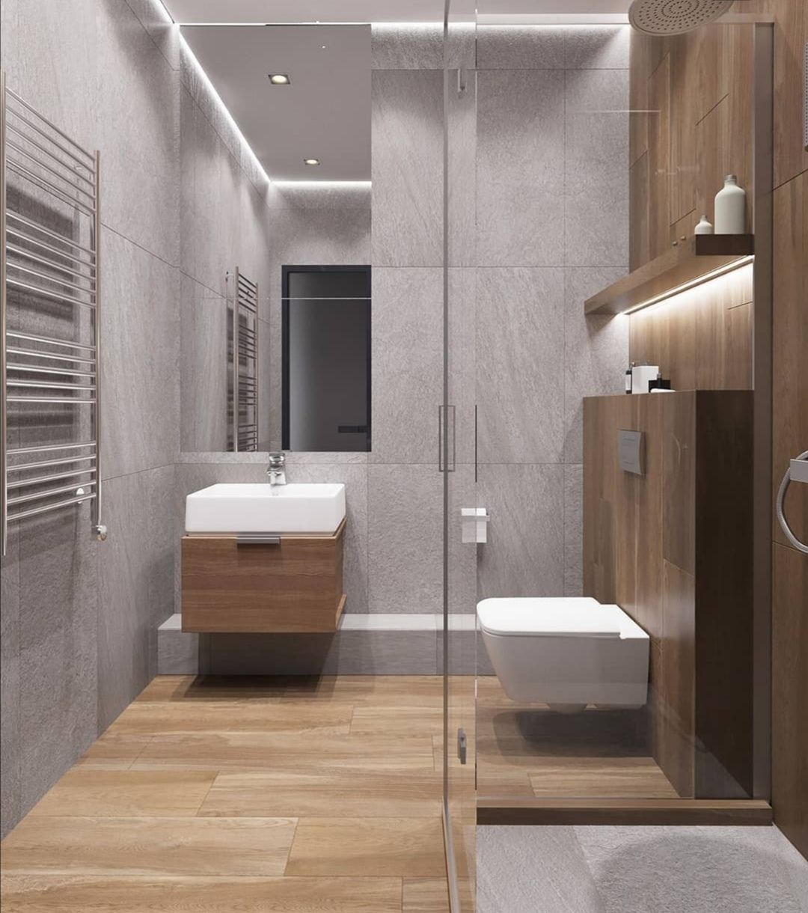
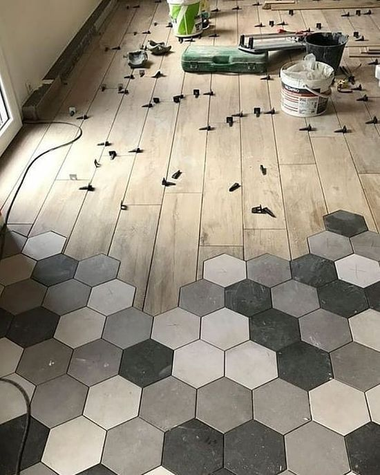
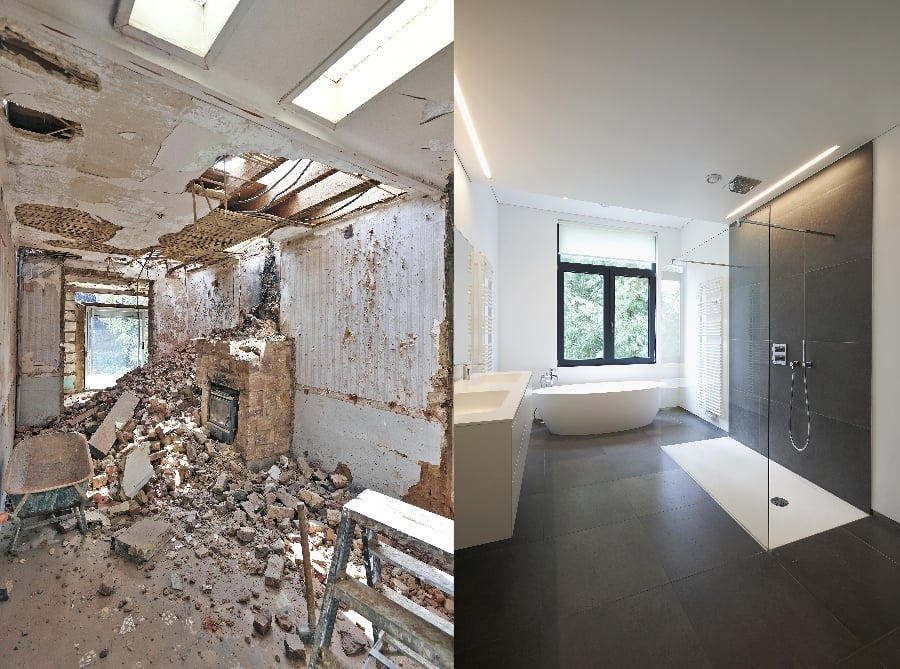
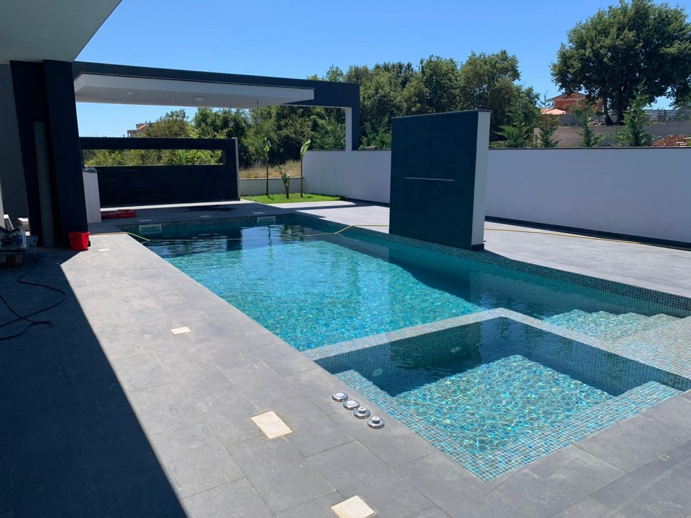
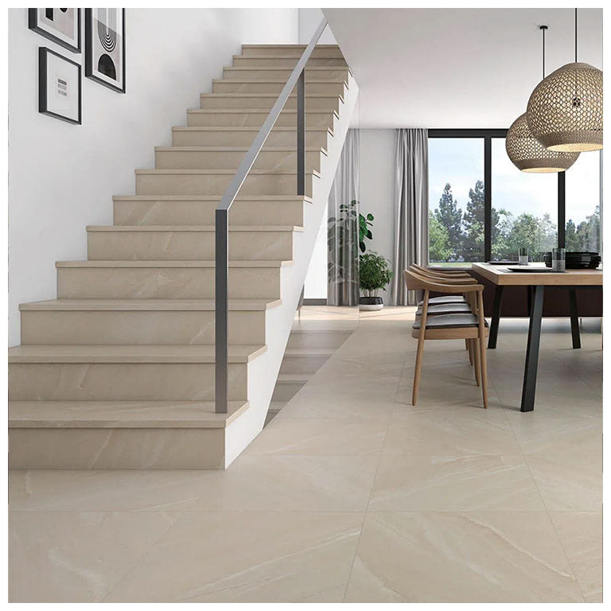
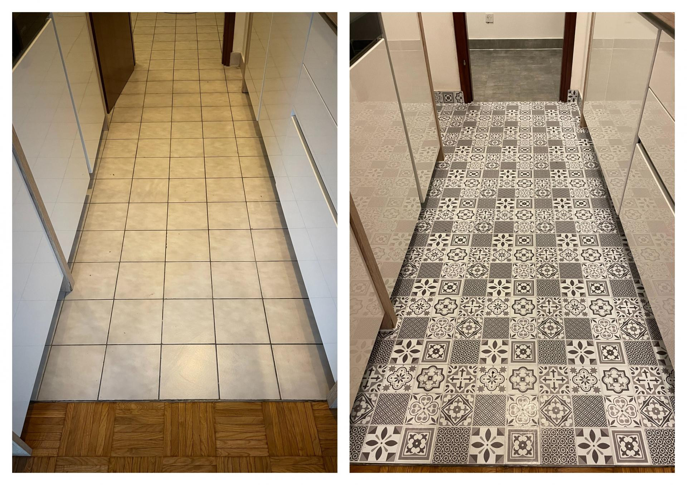
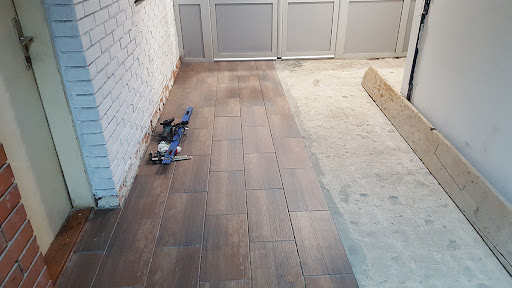
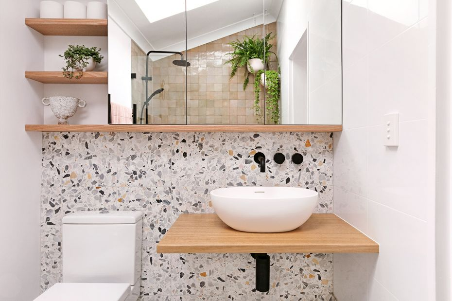

Naši radovi

Renovacija jedne kupaonice, gdje j eklijent izrazio želju za retro stilom.

Plocice postavljene u kupaonici u imitaciji drva

Heksagonalne plocice iz kuhinje sa prijelazom u dnevni boravak

Potpuna renovacija kupaonice

Naš rad- bazen

Mat pločice imitacija bež mramora u predosblju, blagavaonici te na stepenicama.

Zamjena plocica u kuhinji, gdje je klijent izrazio zelju za mješanim dekorom.

Postavljanje pločica u tijeku. Imitacija laminata!
 Postavljanje kamena na zid u dnevnom boravku.
Postavljanje kamena na zid u dnevnom boravku.

Terrazzo pločice u kupaonici. Veseli i razigrani stil.